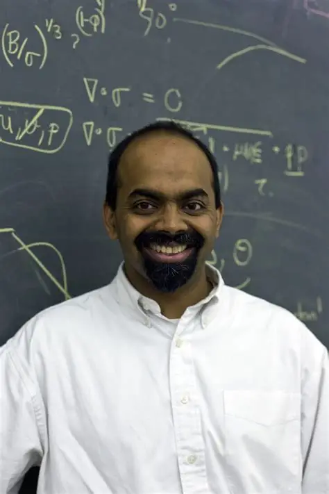

Welcome to the Mathematical World!
L. Mahadevan (b. 1967)
Applied Mathematician and Interdisciplinary Scientist
Early Life and Education
Lakshminarayanan Mahadevan, commonly known as L. Mahadevan, was born in India in 1967. He completed his undergraduate studies at the Indian Institute of Technology (IIT), Madras. He then pursued graduate studies in the United States, earning a Master of Science from the University of Texas at Austin and both a Master of Science and Ph.D. from Stanford University in 1995.
Academic Career and Research
Mahadevan began his academic career at Harvard University in 2003, where he holds the position of Lola England de Valpine Professor of Applied Mathematics, with joint appointments in Organismic and Evolutionary Biology and Physics. His research focuses on understanding the organization of matter in space and time, particularly how it is shaped and how it flows, especially at the scale observable by the unaided senses, in both physical and biological systems.
Contributions to Mathematics and Science
Mahadevan's work lies at the intersection of mathematics, physics, and biology. He applies complex mathematical analyses to a variety of seemingly simple yet intriguing questions across the physical and biological sciences. His research explores phenomena such as:
- How cloth folds when draped
- How skin wrinkles
- How flags flutter
- How Venus flytraps snap closed
Through these explorations, Mahadevan strives to identify commonalities in the fundamental nonlinear and nonequilibrium behavior driving these processes.
Awards and Honors
- 2006: Guggenheim Fellowship
- 2007: Ig Nobel Prize in Physics
- 2009: MacArthur Fellowship ("Genius Grant")
- 2016: Elected as a Fellow of the Royal Society
- 2023: Elected to the American Academy of Arts and Sciences
Legacy and Influence
L. Mahadevan's interdisciplinary approach has significantly influenced the study of complex systems. His ability to connect mathematical theory with real-world phenomena has inspired researchers across various fields, including physics, biology, and engineering. Through his work, Mahadevan has demonstrated the power of mathematics to elucidate the underlying principles governing the natural world.